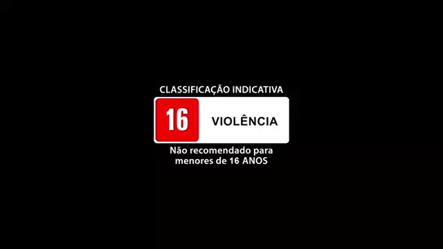

ACORDADO
Você acorda em um quarto sem reconhecer muito bem o ambiente à sua volta.
Você sente uma dor latejante na cabeça e não consegue se lembrar muito bem do que aconteceu na noite anterior.
Você olha em volta e percebe que está:

Olhando à sua volta, você percebe que está em uma suíte de um luxuoso hotel.
À sua frente uma escrivaninha com um notebook fechado e um cartão, à direita uma janela com grandes cortinas que vão até o chão.
Ao lado esquerdo da escrivaninha há uma porta que leva ao banheiro da suíte.
De repente, o telefone toca. O que você faz?
Olhando à sua volta, você percebe que está em seu quarto.
As janelas estão fechadas, a porta do quarto entreaberta. Parece ser noite, mas há uma luz acesa do lado de fora.
Você escuta seu priminho te chamar. O que você faz?
Você fala “Alô” e a voz grave de um homem de meia idade diz:
“Parece que a noite de ontem foi realmente boa! Mas espero que esteja no saguão do hotel com a maleta em meia hora! Não me faça subir até aí e pegar”.
Mesmo sem entender muito bem, uma sensação de medo se estabelece e você começa a procurar a tal maleta pelo quarto.
O seu tempo está acabando, então você começa a abrir todas as portas e gavetas que encontra no quarto, até que finalmente: A maleta! O que você faz agora?
Ainda se sentindo um pouco atordoado, você resolve deixar o telefone tocar e vai até o banheiro tomar um banho.
A pressão do chuveiro é ótima e você consegue achar a temperatura perfeita para seu banho. O sabonete fornecido pelo hotel é muito cheiroso e faz uma espuma macia.
Você se sente completamente relaxado até que, em um movimento súbito, a porta do box se abre e tudo escurece.
Você foi encapuzado e está sendo arrastado pelo banheiro. Neste momento, você:
Você acha melhor entregar de uma vez a maleta. Você pega o cartão, que imagina ser a chave do quarto, e sai. O elevador fica no final de um estranho corredor. Você entra no elevador, aperta o botão T e as portas se fecham.
Há um pen drive dentro da maleta. Você:
Você começa a se debater e chutar tudo à sua volta, o que faz com que seus captores comecem a se irritar. Você leva um chute na boca do estômago e três socos na cara.
“Agora já chega! Entregue a maleta agora ou você morre!” Seu capuz é removido e o cano de uma arma está apontada para seu rosto! Você:
Ao se mostrar disposto a cooperar, jogam um roupão em cima de você e retiram seu capuz com um puxão. Você o veste depressa enquanto um dos dois homens armados em sua frente diz:
“Não piore as coisas para você. Entregue a maleta agora e todo mundo sai ganhando.”
Chegando no térreo você se dirige ao saguão do hotel e fica cada vez mais ansioso. Não faz ideia de quem deveria procurar, mas um grupo de homens muito mal encarados acena para você.
"Achei que fosse precisar te buscar lá em cima! Hahaha", disse um homem calvo, com um rosto horrível. Você dá um sorriso amarelo e entrega a maleta para o homem. Ele a recebe com ansiedade. O homem abre a maleta e seu rosto se retorce num sorriso grotesco.
"Muito bem! Aqui está seu pagamento. É sempre um prazer fazer negócios com você". Você fica com uma outra maleta, os homens se levantam e saem do hotel. Sem entender muito bem o que aconteceu, mas sentindo um alívio imenso, você:
Você liga o notebook que está sobre a escrivaninha e abre o pen drive. São muitos arquivos, mas pelo que consegue entender, eles falam sobre bombas atômicas.
A porta é aberta com um estrondo e seu quarto é invadido por cinco homens armados.

Um deles grita: “Seu trabalho era entregar a maleta! Mais nada! Por que ninguém faz seu trabalho direito?!”
Antes que você possa responder, três tiros são disparados. Você cai no chão e - sem entender direito o que aconteceu - seu fim chega.
Você morreu.
Você não faz a menor ideia de que droga de maleta é essa, mas começa a procurar desesperadamente pelo quarto do hotel. As armas não param de apontar para você por nenhum momento.
Você vasculha todas as portas e gavetas do quarto, seu coração bate cada vez mais rápido, até que finalmente: A maleta!
Um homem calvo, com um rosto horrível entra em seu quarto. Você entrega a maleta a ele com ansiedade. O homem abre a maleta e seu rosto se retorce num sorriso grotesco. A maleta se fecha.
"Muito bem! Aqui está seu pagamento. É sempre um prazer fazer negócios com você".
Você recebe outra maleta, os homens saem do quarto. Sem entender muito bem o que aconteceu, mas sentindo um alívio imenso, você:

Você vai embora deixando a maleta para trás
Duas semanas depois você está em um bar e ao olhar para a TV sente um frio na espinha.
Você vê nos jornais que um grupo terrorista conseguiu tudo o que precisava para hackear os sistemas de segurança de 5 países que possuíam ogivas nucleares. Dentre os terroristas, a foto do homem calvo de rosto horrível. Bombas caem por toda parte.
O mundo está acabando e a culpa é sua.

Ao abrir a maleta você encontra:
- Passaporte;
- Passagem para as Bahamas;
- Uma quantidade obscena de dinheiro.
Duas semanas se passaram e você está nas Bahamas, deitado em areias branquinhas em frente ao mar mais azul que já viu na vida. Ao longe sobem fumaças em formato de cogumelo.
Você tenta aproveitar cada momento dessa experiência que sabe que será curta. Você viu nos jornais que um grupo terrorista conseguiu tudo o que precisava para hackear os sistemas de segurança de 5 países que possuíam ogivas nucleares.
Dentre os terroristas, a foto do homem calvo de rosto horrível. Bombas caem por toda parte.
O mundo está acabando e a culpa é sua.
ACORDADO
Acordado é um jogo de escolhas criado no ano de 2024 para a disciplina de Tecnologia.
O código fonte foi desenvolvido utilizando HTML, CSS e Javascript.
As imagens utilizadas são meramente ilustrativas.
Em caso de dúvidas, entre em contato com ...
Você se levanta e começa a caminhar, segura a maçaneta e abre a porta.
Neste exato momento a luz do corredor se apaga. Você acha estranho, mas continua a caminhar em direção ao quarto do outro lado do corredor.
Agora você está em pé, em frente à porta do quarto. Seu primo continua a te chamar. Você percebe que sua voz está um pouco trêmula. O que você faz?
Ao entrar no quarto, seu priminho está encolhido sob as cobertas. Parece estar apavorado!
Você pergunta o que aconteceu e ele, tremendo de terror, responde: "Acho que tem um monstro embaixo da minha cama!
Você tenta acalmá-lo dizendo que monstros não existem, mas ele continua aterrorizado e insiste que está sentindo o monstro sob seu colchão.
Após alguns instantes, você começa a ouvir uma respiração ofegante vindo debaixo da cama. O que você faz?
Ao se virar, uma figura horrível surge em sua frente.
"Quando eu chamar, você atende!", diz ela.
Você se sente apavorado, mas não por muito tempo. De forma abrupta, tudo ao seu redor escurece.
Você morreu!
Um pouco apreensivo, você se ajoelha, inclina o corpo e olha embaixo da cama do seu primo.
Para sua surpresa, seu primo está lá! Seus olhos arregalados de pavor e com um sussuro ele diz:
"Tem um monstro em cima da minha cama!"